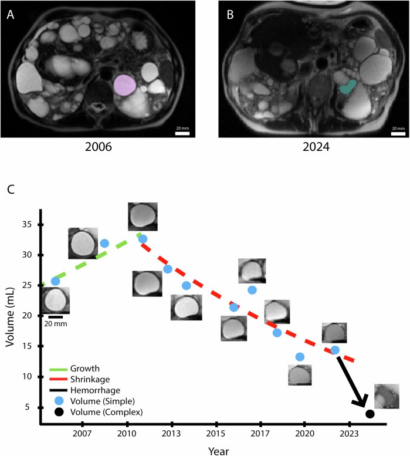
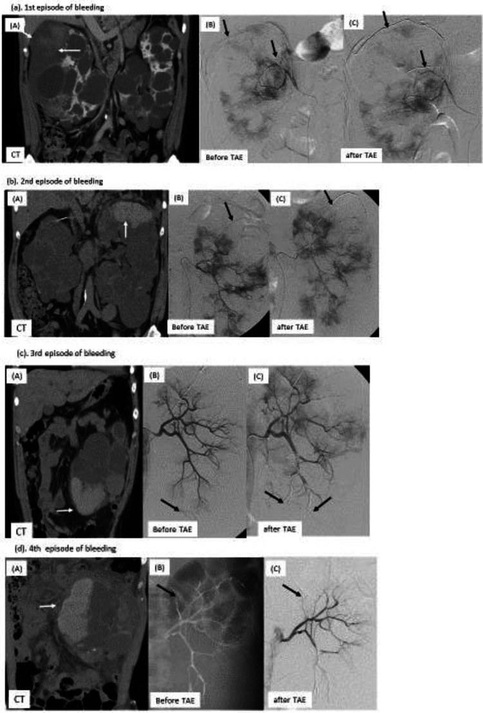
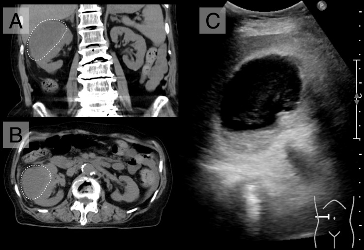
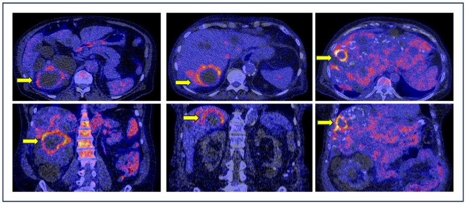

164 — Nang thận ADPKD có biến chứng: xuất huyết, nhiễm trùng, sỏi & chảy máu sau phúc mạc (Wunderlich)
Tags: pattern:nang-phuc-tap vung:than score:Bosniak protocol:CT-MRI-nang-than incidentaloma:nang-than
Mức chắc chắn (certainty): tổng hợp y văn (literature synthesis) — nhóm tự biên từ y văn mở (Commun Med 2025, Kidney Int Rep 2026, Cureus 2026, Diagnostics 2024, CEN Case Rep 2025) và đối chiếu KDIGO 2025 qua bản bình luận Canada 2026; không gắn một ca nguyên văn duy nhất.
1. Tổng quan bệnh học – cơ chế hình ảnh
- Bệnh thận đa nang trội NST thường (autosomal dominant polycystic kidney disease — ADPKD) có hai loại nang trên hình ảnh: nang đơn giản (simple cyst) chứa dịch trong và nang phức tạp (complex cyst) do xuất huyết trong nang hoặc nhiễm trùng nang. Nang phức tạp gần như gặp ở mọi bệnh nhân ADPKD khi theo dõi đủ lâu, nhưng nhiễm trùng nang thì hiếm, ước tính 0,01 đợt/bệnh nhân/năm, thường sau nhiễm trùng tiểu (PMC12852659, PMC13639172).
- Lịch sử tự nhiên của từng nang (MRI dọc 8–20 năm, 299 nang/37 bệnh nhân): nang đơn giản tăng theo mô hình logistic với tốc độ trung vị 11%/năm; 94/222 nang (42%) chuyển sang giai đoạn teo nhỏ → nang thành phần đặc–dịch hoặc mức dịch–dịch → nang đồng nhất T1 sáng → biến mất. Ngược lại, nang T1 sáng đồng nhất không tăng thể tích (trung vị 0%/năm, p < 0,001) — đây là máu cũ đã “cháy hết”, không phải u đang hoạt động (PMC12852659).
- Sỏi thận gặp ở 8–36% bệnh nhân ADPKD, nguy cơ tương đối 2–10 lần dân số chung; tuổi khởi phát triệu chứng trung bình 39 ± 14 tuổi, 25–50% có triệu chứng; đa số là sỏi acid uric, sau đó calcium oxalate monohydrat (PMC12527218).
- Chảy máu sau phúc mạc tự phát (Wunderlich syndrome) là biến chứng hiếm nhưng nặng: máu tụ dưới bao (subcapsular) hoặc quanh thận (perinephric), có thể gây Page kidney (chèn ép nhu mô → tăng huyết áp do renin) và sốc giảm thể tích; nút mạch qua ống thông (transarterial embolization — TAE) vừa cầm máu vừa bảo tồn thận (PMC12972201).
- TẠI SAO đọc được trên CT/MRI (vật lý + mô bệnh):
- Nang đơn giản: dịch trong → 0–15 HU, T1 thấp, T2 rất cao, thành mỏng không thấy được.
- Xuất huyết nang cấp: hemoglobin thoái giáng thành methemoglobin (thuận từ) → T1 sáng, không mất tín hiệu khi fat-sat (khác mỡ); trên CT 30–100 HU, có thể thấy mức dịch–dịch, cục máu co rút, không ngấm thuốc (PMC13639172).
- Nhiễm trùng nang: dịch đặc hơn + viêm thành → đậm độ CT tăng với ngưỡng 10 HU, tỷ số tín hiệu T1 > 1,0, DWI > 4,0, kèm thành dày, viêm mỡ quanh nang, bóng khí; đây là các dấu hiệu gợi ý, không đặc hiệu tuyệt đối (PMC12869266).
- Sỏi: đậm độ calci cao, đo trên cửa sổ xương; CT hai năng lượng (dual-energy CT) phân biệt sỏi acid uric với sỏi calci (PMC12527218).
- Máu tụ Wunderlich: máu cấp 50–70 HU, hình liềm dưới bao ép nhu mô; theo thời gian đậm độ giảm dần và có thể dịch hóa.
2. Mẫu hình + chẩn đoán phân biệt theo vị trí (gamut)
- Mẫu hình 1 — nang “sáng” hoặc “đặc” trong thận đa nang: nang xuất huyết, nang nhiễm trùng, ung thư biểu mô tế bào thận (renal cell carcinoma — RCC) thể nhú, nang đạm/mucin, mảng xơ–vôi.
- Mẫu hình 2 — tổn thương quanh thận: máu tụ Wunderlich, nang vỡ, áp-xe quanh thận, rò nước tiểu (urinoma), di căn/lymphoma.
- Mẫu hình 3 — đậm độ calci trong xoang thận: sỏi thận, vôi hóa thành nang, vôi hóa mạch máu, di vật.
- Gamut theo bối cảnh:
- Sốt + đau hông lưng + CRP cao → nang nhiễm trùng; nếu CT/MRI không rõ → ¹⁸F-FDG PET/CT.
- Đau hông lưng + tiểu máu + Hb giảm, không sốt → nang xuất huyết hoặc Wunderlich.
- Tình cờ, không triệu chứng, T1 sáng đồng nhất → nang xuất huyết cũ; không sinh thiết, không mổ.
- Nốt đặc ngấm thuốc trong nang → nghi RCC, đặc biệt RCC thể nhú ở bệnh thận mạn.
- Mnemonic “BLOOD–PUS–STONE–TUMOR”: Bleed (xuất huyết), Pus (nhiễm trùng), Stone (sỏi), Tumor (RCC); thêm Wunderlich khi có máu tụ quanh thận.
3. Bảng so sánh phân biệt (ma trận đối chiếu)
| Thực thể (entity) | Hình ảnh điển hình (US/CT/MRI) | Chốt vào (rule-in) | Chốt loại (rule-out) | Gợi ý xác nhận |
|---|---|---|---|---|
| Nang xuất huyết (hemorrhagic cyst) | CT 30–100 HU, không ngấm; MRI T1 sáng, không mất tín hiệu fat-sat, có mức dịch–dịch hoặc cục máu co rút; kích thước không tăng theo thời gian | T1 sáng + không ngấm + không tăng thể tích (trung vị 0%/năm) | Ngấm thuốc dạng nốt/thành dày tiến triển → nghĩ u; sốt + CRP cao → nghĩ nhiễm trùng | So phim cũ; MRI T1 ± fat-sat; theo dõi 6–12 tháng nếu chưa chắc |
| Nang nhiễm trùng (infected cyst) | Thành dày, viêm mỡ quanh nang, bóng khí, dịch đặc; CT > 10 HU, T1 ratio > 1,0, DWI > 4,0; PET/CT ngấm FDG | Sốt > 38°C + CRP > 15 mg/dL + WBC > 10.000/µL + ổ ngấm FDG tương ứng | Không sốt, CRP bình thường, T1 sáng đồng nhất → xuất huyết | Cấy máu/nước tiểu; ¹⁸F-FDG PET/CT (Se 84,6%, Sp 94,9%); chọc hút/dẫn lưu khi kháng trị |
| Wunderlich (máu tụ dưới bao/quanh thận) | Liềm máu tụ 50–70 HU ép nhu mô; thận to, có thể Page kidney; CTA thấy thoát mạch hoặc giả phình | Đau hông lưng đột ngột + Hb giảm + máu tụ quanh thận trên CT, không chấn thương | Chỉ có nang đơn giản, không dịch quanh thận → loại | CTA khẩn; TAE nếu thoát mạch/không ổn định |
| RCC trong ADPKD | Nốt đặc ngấm thuốc trong nang/thận, washout; RCC thể nhú thường ít ngấm, ở bệnh thận mạn | Thành phần đặc ngấm thuốc sau tiêm, không phải máu tụ | T1 sáng đồng nhất, không ngấm, không tăng thể tích → xuất huyết | MRI đa thì; sinh thiết/ cắt bỏ khi nghi ngờ |
| Sỏi thận | Đậm độ calci trong xoang/đài thận; CT không cản quang là chuẩn; dual-energy phân biệt acid uric/calci | Đậm độ calci + vị trí trong đường bài xuất | Đậm độ thấp, nằm trong nang → không phải sỏi | CT KUB liều thấp; đối chiếu cửa sổ xương |
| Page kidney | Máu tụ dưới bao mạn tính ép nhu mô, thận thiếu máu; tăng huyết áp | HA tăng mới + máu tụ dưới bao | HA bình thường, không máu tụ → loại | Đo renin, siêu âm Doppler, CTA |

MRI theo dõi 2006 → 2024: nang đơn giản (tím, 2006) teo dần rồi thành nang phức tạp T1 sáng đồng nhất (xanh, 2024); biểu đồ thể tích cho thấy nang T1 sáng không còn tăng thể tích. Nguồn: Hu Z et al., Commun Med 2025 (PMC12852659), CC BY-NC-ND 4.0 — giữ nguyên bản.4. Protocol chụp + hệ phân độ/điểm chuẩn hóa + hướng xử trí
- CT bụng – thận: không cản quang trước, sau đó thì vỏ–tủy và thì thận (lát 1–2 mm); dùng dual-energy khi nghi sỏi. Không lặp cản quang không cần thiết ở bệnh thận mạn.
- MRI thận: T1 in/out-phase + T1 fat-sat + T2 + DWI/ADC + sau tiêm; T1 sáng không mất tín hiệu fat-sat = máu/đạm, không phải mỡ. So sánh với phim cũ là bước rẻ nhất để phân biệt xuất huyết cũ với u.
- Siêu âm: thành nang, vách, echo trong nang, Doppler; hạn chế khi thận quá to/nhiều nang.
- ¹⁸F-FDG PET/CT: chỉ định khi nghi nang nhiễm trùng mà CT/MRI không rõ; gộp 10 nghiên cứu (282 lần chụp/249 bệnh nhân) cho Se 84,6% (95% CI 75,4–90,7), Sp 94,9% (95% CI 72,6–99,2) và thay đổi xử trí ở hơn một nửa bệnh nhân (PMC11312050). Lưu ý hoạt động sinh lý đường tiết niệu và viêm quanh nang có thể dương tính giả.
- Phân độ Bosniak 2019 dành cho khối nang thận đơn lẻ, không dùng máy móc cho ADPKD; trong ADPKD, thành phần đặc ngấm thuốc mới là dấu hiệu nghi ác, còn nang xuất huyết không ngấm thường lành tính.
- Nhiễm trùng nang — KDIGO 2025 (qua bình luận Canada 2026): cấy máu + nước tiểu, kháng sinh tan trong mỡ (fluoroquinolone hoặc trimethoprim–sulfamethoxazole), 4–6 tuần; dẫn lưu nang khi kháng trị; không dùng kháng sinh ngắn ngày như nhiễm trùng tiểu thường (PMC13237251).
- Sỏi: CT KUB liều thấp; ESWL vẫn dùng được nhưng sạch sỏi thấp hơn thận bình thường do nang chèn ép; RIRS/PCNL cho sỏi lớn/đài phức tạp; đánh giá chuyển hóa và dự phòng tái phát (PMC12527218).
- Wunderlich: hồi sức + CTA; TAE là lựa chọn ưu tiên để cầm máu và giữ thận; phẫu thuật khi vỡ không kiểm soát. Sau TAE, nhiễm trùng nang giảm từ 0,291 xuống 0,087 đợt/năm (p < 0,001) nhưng không nên TAE khi đang còn nhiễm trùng nang hoạt động vì có thể tái hoạt ổ nhiễm (PMC13639172).
flowchart TD
A[Nang tang dam do hoac T1 sang tren ADPKD] --> B{Co sot, dau hong lung, CRP tang?}
B -->|Co| C[Nghi nang nhiem trung: cay mau, nuoc tieu]
C --> D{CT/MRI ro o nhiem?}
D -->|Khong| E[18F-FDG PET/CT]
D -->|Co| F[Khang sinh tan trong mo 4-6 tuan]
E --> F
F --> G{Khong dap ung?}
G -->|Co| H[Dan luu nang / y kien trung tam ADPKD]
G -->|Khong| I[Theo doi]
B -->|Khong| J{Co nang dac ngam thuoc?}
J -->|Co| K[Nghi RCC: MRI da thi, sinh thiet/cat]
J -->|Khong| L{Co dam do calci trong duong bai xuat?}
L -->|Co| M[Soi than: CT KUB, dual-energy]
L -->|Khong| N{Co mai tu quanh than?}
N -->|Co| O[Wunderlich: CTA, TAE neu thoat mach]
N -->|Khong| P[Nang xuat huyet cu: so phim, theo doi]
5. Biến thể bình thường và cạm bẫy
- “T1 sáng = máu” chưa đủ: dịch đạm cao, mucin, nang bẩm sinh cũng có thể T1 sáng; trong ADPKD máu là nguyên nhân hay nhất nhưng phải kiểm tra không ngấm thuốc và không tăng thể tích.
- Xuất huyết vs nhiễm trùng: hai bên đều tăng đậm độ/T1; ngưỡng 10 HU và 30–100 HU chồng lấp. Dùng bối cảnh: sốt > 38°C, WBC > 10.000/µL, CRP > 15 mg/dL nghiêng nhiễm trùng; đau + Hb giảm nghiêng xuất huyết. Đừng chỉ dựa vào một ngưỡng.
- PET/CT không phải “chân lý”: viêm quanh nang, sau can thiệp, hoạt động sinh lý đường niệu có thể dương tính giả; nang nhỏ có thể âm tính giả. Luôn đối chiếu lâm sàng + cấy.
- Sỏi vs vôi hóa thành nang: vôi hóa thành nang thường cong theo thành, không nằm trong lòng đường bài xuất; sỏi nằm trong đài/bể thận, di chuyển theo tư thế trên CT.
- Wunderlich có thể không đau: bệnh nhân chỉ thấy mệt, Hb giảm, HA tăng (Page kidney); đừng chờ “đau hông lưng điển hình”.
- Sau TAE: đậm độ nang có thể tăng do vật liệu nút mạch/hoại tử, dễ đọc nhầm nhiễm trùng; so phim và dùng PET khi cần.
- Bosniak trong ADPKD: đừng gọi nang xuất huyết là Bosniak III chỉ vì “đậm độ cao”; Bosniak dựa trên ngấm thuốc/thành phần đặc, không dựa trên đậm độ máu cũ.
6. Tự lượng giá — Blind Quiz
Ca 1 — Nữ 56 tuổi, ADPKD, theo dõi MRI 18 năm. Nang thận phải thay đổi tín hiệu. Nhìn 2 thời điểm, mô tả trước.
- Gợi ý: không có triệu chứng nhiễm trùng; theo dõi định kỳ.
- Hỏi: nang thay đổi thế nào? Tín hiệu T1 nói lên điều gì? Có cần sinh thiết không?
Bấm để hiện đáp án (findings + chẩn đoán)
- Dấu hiệu: năm 2006 nang đơn giản T2 sáng/T1 tối; năm 2024 nang T1 sáng đồng nhất, thể tích không tăng (biểu đồ: nang phức tạp đi ngang 0%/năm).
- Chẩn đoán: nang xuất huyết cũ (hemorrhagic cyst) — methemoglobin làm T1 sáng; xơ hóa/co rút làm nang ngừng tăng thể tích.
- Không sinh thiết khi không có thành phần đặc ngấm thuốc; theo dõi bằng MRI nếu cần.
- Nguồn ảnh: Hu Z et al., Commun Med 2025 (PMC12852659), CC BY-NC-ND 4.0.
Ca 2 — Nam 45 tuổi, ADPKD, đau hông lưng phải đột ngột, tăng huyết áp, không chấn thương. CT bụng cấp.

- Gợi ý: không chấn thương; thận hai bên nhiều nang.
- Hỏi: dịch quanh thận là gì? Vì sao HA tăng? Bước tiếp theo?
Bấm để hiện đáp án (findings + chẩn đoán)
- Dấu hiệu: máu tụ dưới bao/quanh thận (liềm tăng đậm độ), thận phải bị ép; DSA có thoát mạch từ nhánh động mạch bao thận, được TAE bằng microcoil.
- Chẩn đoán: Wunderlich syndrome do nang ADPKD vỡ; HA tăng do Page kidney (máu tụ ép nhu mô → renin).
- Xử trí: hồi sức, CTA, TAE để cầm máu và bảo tồn thận; theo dõi Hb, HA, chức năng thận.
- Nguồn ảnh: Mizuta M et al., CEN Case Rep 2025 (PMC12972201), CC BY 4.0.
Ca 3 — Nữ 89 tuổi, nang thận phải đã biết, chỉ mệt, chán ăn, chóng mặt; CRP tăng và nước tiểu có E. coli. CT và siêu âm bụng.

- Gợi ý: nước tiểu có E. coli; nang to hơn phim cũ.
- Hỏi: dấu hiệu nào nghi nhiễm trùng? Phân biệt với xuất huyết? Khi nào dùng PET/CT?
Bấm để hiện đáp án (findings + chẩn đoán)
- Dấu hiệu: nang to ra, thành dày, viêm mỡ quanh nang, dịch đặc/echo trong nang; không có cục máu co rút.
- Chẩn đoán: nang nhiễm trùng (infected cyst) — vi khuẩn từ đường tiểu; đậm độ > 10 HU, T1 ratio > 1,0, DWI > 4,0 là các ngưỡng gợi ý.
- Xử trí: kháng sinh tan trong mỡ 4–6 tuần; dẫn lưu nếu kháng trị. Khi CT/MRI không rõ, ¹⁸F-FDG PET/CT (Se 84,6%, Sp 94,9%):

- Nguồn ảnh: Ito Y, Sunada K., Cureus 2026 (PMC12869266), CC BY 4.0; Treglia G et al., Diagnostics 2024 (PMC11312050), CC BY 4.0.
Bài liên quan chéo
- 157 – Bệnh thận đa nang ADPKD/ARPKD & gan đa nang
- 150 – Nang thận & phân độ Bosniak
- 151 – U thận đặc: RCC vs oncocytoma vs AML
- 153 – Bệnh thận nang mắc phải (ACKD) & RCC
- 178 – Di căn xương RCC & biến chứng cơ học
Không dùng để chẩn đoán độc lập khi chưa có người hướng dẫn.